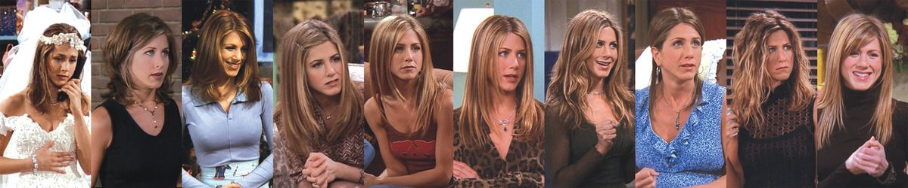

A série apresentou os seis membros do elenco principal durante toda a sua exibição, com inúmeros
personagens secundários recorrentes em todas as dez temporadas.
Rachel Green (Jennifer Aniston) era uma mulher rica e mimada que, após
abandonar o noivo no altar,
foi morar com Monica, uma
amiga do colegial. O primeiro trabalho de Rachel foi como garçonete no café Central Perk, se
tornando,
posteriormente, uma vendedora na Bloomingdale's e na Ralph Lauren, na quinta temporada. Vivia uma
relação
instável com Ross, na qual tiveram uma filha, Emma. Rachel, apesar de ser inicialmente dependente da
família, durante o seriado amadurece e passa a ser uma mulher independente. No último episódio da
10ª
temporada, desiste de sua viagem a trabalho e passa a namorar novamente Ross.

Rachel Green através das 10 temporadas
Monica Geller (Courteney Cox), irmã de Ross e chef de cozinha, é
obsessiva-compulsiva por limpeza
e tem um
espírito competitivo. Durante a adolescência, era obesa, o que é motivo de lembranças ruins
e neuroses. Todos os personagens gostam de se encontrar no seu apartamento. Apesar dos defeitos, ela
é a anfitriã-mor da série. Começa a namorar Chandler e se casa com ele na sétima temporada do
programa. Na décima temporada, adotam dois filhos por uma barriga de aluguel, uma adolescente que
engravidou por acidente e não sabia que teria gêmeos.
Monica Geller através das 10 temporadas
Phoebe Buffay (Lisa Kudrow ) saiu de casa aos 14 anos, e foi moradora
de rua antes de conhecer seus
amigos.
Excêntrica e vegetariana, sua mãe se suicidou, e seu pai abandonou a família. Ela e sua irmã gêmea,
Ursula, se odeiam. Conheceu seu meio-irmão, Frank, e aceitou ser "barriga de aluguel" para ele.
Trabalha como musicista (criando músicas como "Gato Fedorento/Smelly Cat") e massagista. Na
temporada final, ela se casa com Mike Hannigan, interpretado por Paul Rudd.
Phoebe Buffay através das 10 temporadas
Joey Tribbiani (Matt LeBlanc) é um ator ítalo-americano que se torna
famoso por seu papel na
telenovela Days of our
Lives como doutor Drake Ramoray. Tornou-se companheiro de quarto de Chandler. Possui um cômico
raciocínio lento, fome enorme e adoração por pizza. Tenta conquistar toda mulher que aparece em sua
frente com sua famosa frase "How you doing?". Nutriu um amor por Rachel que foi superado.
Joey Tribbiani através das 10 temporadas
Chandler Bing (Matthew Perry) foi um processador de dados (emprego
esse desconhecido pelos seus
amigos) e odiava
esse trabalho até que, na nona temporada, ele finalmente teve coragem de se demitir para trabalhar
com publicidade (trabalho de que ele gostava de verdade). Ele é o mais cômico dos personagens, e
conhecido por seu humor sarcástico. É questionado sobre sua sexualidade e tem um pai travesti, o
que aumenta ainda mais os rumores sobre esse tema. Sua mãe é uma famosa escritora de romances
adultos. Seu relacionamento mais longo, antes do casamento com Monica Geller, foi com a irritante
Janice, eternamente conhecida pela velha e inconfundível frase: "Oh... my... God!". O namoro com
Janice finalmente acabou na terceira temporada.
Chandler Bing através das 10 temporadas
Ross Geller (David Schwimmer), irmão mais velho de Monica, é um
paleontólogo que ama dinossauros e
que se divorciou
três vezes durante o seriado: da lésbica Carol (que lhe deu seu primeiro filho, Ben), da britânica
Emily (cujo nome ele trocou pelo de Rachel no dia do casamento), e de Rachel (casaram-se bêbados em
Las Vegas). Rachel e Ross tiveram uma filha juntos, Emma. É muito inteligente e apaixonado por
Rachel desde o colegial.